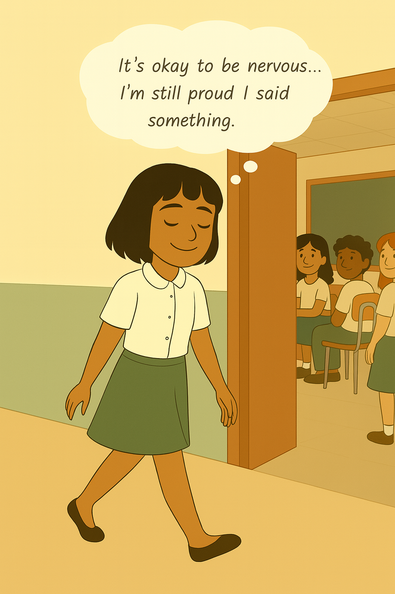

🌈 장면 5 – 이제 마음이 차분해졌어요
벨라는 가벼운 마음으로 교실을 나옵니다.
그녀는 자신에게 살짝 미소를 짓습니다. 말할 수 있어서 기쁩니다.
무서운 감정이 완전히 사라진 건 아니지만, 이제는 그렇게 크지 않게 느껴집니다.

“긴장해도 괜찮아… 말한 내 자신이 자랑스러워.”
🧠 부모님을 위한 팁: 아이가 마음을 열었을 때 완벽한 말보다 중요한 건 ‘곁에 있는 것’입니다. 이야기해줘서 고맙다고 전하고, 작게라도 말할 수 있었던 용기를 칭찬해주세요.